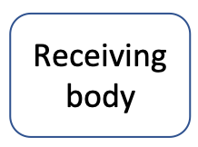
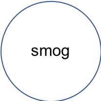
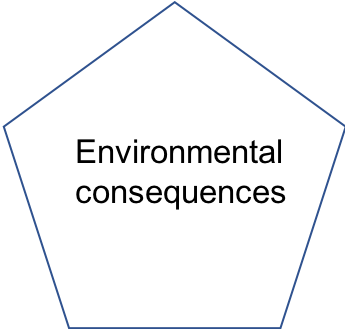

Chapter 1 Introduction
1.1 Biogeochemistry applied to excess nutrients in rural aquatic environments
This chapter is still under construction
A query using the word ‘biogeochemistry’ on NC State University libraries’ website yielded 651 books on the subject in August 2018… So why have yet another one, or even a course that deals with biogeochemistry…?! I suppose we are never done with a subject which is rather amorphous, that involves many disciplines, and has many fields of application.
Wikipedia (2018m) has some nice definitions of Biogeochemistry, including:
Biogeochemistry is the study of the cycles of chemical elements, such as carbon and nitrogen, and their interactions with and incorporation into living things transported through earth scale biological systems in space through time.
With the definition above, the study of ancient earth history or of modern acid rains (e.g., Degens 1989; Schlesinger 2005) are included in biogeochemistry… The unifying theme is that regardless of the application, the processes involved stay pretty much the same and involve transfer of electrons and protons. Differences within the general umbrella of biogeochemistry comes from the fields of application.
The field of application of this book is excess nutrient and sediment loads generated by human activities, their consequences on aquatic ecosystems, and the processes involved in treatment systems to improve and protect groundwater and surface water quality in watersheds. There is a niche in disturbed, nutrient rich, often rural environments, where we perceive there is a need for an integrated and horizontal delivery of knowledge spanning from electron orbitals, biochemistry, cell microbiology, hydrological functioning, process kinetics modeling, and treatment system design.
1.2 Ecologically engineered systems treated as black boxes
With the realization that water pollution was a true and real problem to be dealt with, Western countries at least, enacted laws starting in the 1970s (the most iconic might be the ‘Clean Water Act’ or the Federal Water Pollution Control Act in the USA enacted in 1972 (“S. 2770, Federal Water Pollution Control Act Amendments of 1972,” n.d.; Wikipedia contributors 2022)) to start regulating these pollutions. They were, and still are, classified into Point Source (PS; where the discharge could be pointed out and spatially limited including industrial and municipal discharges, as well as some agricultural facilities such as animal feedlots) and Non-Point Source (NPS) also referred to as diffuse pollution (Wikipedia contributors 2022), in which excess nutrients in agricultural and suburban watersheds are classified.
The term Best Management Practices (BMPs) has been used for a long time in the USA and Canada starting at the beginning of the XXth century (Wikipedia contributors 2020e), but was widely adopted in the agricultural and stormwater research communities in the 1990s. Canadians now prefer the term Beneficial instead of Best in BMPs, probably for good reasons as these continue to change and improve. BMPs correspond to practices that government agencies recommend to implement in the field:
1- to lower the pollution potential at its source, such as lowering fertilization rates, or no-till practices in agricultural fields, or enhancing infiltration, and 2- to filter out pollutants from water at the edge-of-field or edge-of-neighborhood before it would reach the hydrographic network.
This book focuses on the systems that have been used over the last 50 years or so to filter out pollutants at the edge-of-field and edge-of-neighborhood.
Among the most iconic discoveries of pollution filtering systems in the agricultural setting, was the discovery in the 1980s of the capacity of stream side area/forest, later referred to as Riparian zones, to largely ‘intercept’ or remove nitrate from the shallow groundwater draining from the adjacent agricultural field to the nearby stream (R. R. Lowrance and Todd 1983; Peterjohn and Correll 1984; Jacobs and Gilliam 1985; R. Lowrance et al. 1984; R. Richard Lowrance et al. 1985; R. Lowrance 1992; Haycock and Pinay 1993; Gilliam 1994). Many studies have ensued providing the general mechanisms at play and general guidance to implement such systems in watersheds (reviewed in Burt, Pinay, and Sabater 2010).
Since then, many other systems have been found and implemented at the edge-of-field and edge-of-neighborhood to filter pollutants out of surface and groundwater. In this book, we will use the generic expression treatment systems to refer to them. These may include systems dedicated to the the filtering out of Suspended Solids (SS) excess phosphorus, pesticides, and pathogens from surface runoff (REF) such as Vegetated Filter Strips (VFS, REF), or filtering out nitrate from groundwater, such as Riparian Zone or Denitrifying Beds (REF), or surface water, such as wetlands, bioretention zone, or stream restoration (REF).
Over the last 50 years or so, we have acquired a decent idea of their overall bulk or apparent capacities to strip excess nutrients, sediment and associated pollutants. In all treatment systems, we have acknowledged the overall treatment performance is driven by the subtle balance between the biogeochemical process kinetic rates and the pollutant loading rates. In most cases, performance of treatment systems has been evaluated through the measured difference in pollutant loads between their inlets and outlets. One of the major reasons is that pollutant loads come in pulses in our treatment systems following rainfall events. One consequence is that, in many instances, treatment systems appear as ‘black boxes’ in which we know little of the internal functioning that result in the overall apparent performance. In particular, it has been very difficult to characterize the biogeochemical process kinetic rates inside these systems. In term, this gives us little chance to possibly predict and improve their performances, discover new processes, and imagine new designs and new systems.
It is thus time to start investigating what happens ‘inside the black box’. Until now, environmental and ecological engineers have managed to get by with rudimentary knowledge of biogeochemistry to design systems that work. Ecologists and biologists have put a lot more emphasis in the understanding and teaching of biogeochemical processes in natural ‘pristine’ systems at first, and have now broadened their approaches to agricultural and suburban settings as well. However, it is the environmental and ecological engineers who will change their profession to design and build better, more efficient treatment systems. For this reason, the next generations of environmental and ecological engineers need to be better equipped with fundamental knowledge in biogeochemistry. And yes, this might currently be somewhat outside their comfort zone. But these professionals or professionals to be have no choice but to acquire (and teach) these fundamentals to keep their professions improving.
By nature, processes at play in treatment systems involve chemical, biological, microbiological, biochemical, physical, and hydrological processes just to name the main ones. Engineers must thus know enough of each of these core scientific domains to make sense of what they will observed in treatment systems.
For example, ecological engineers use the natural denitrification process to remove excess nitrate from ground and surface waters. For ecological engineers to improve and optimize denitrification in treatment systems they design, they must recognize that the fuel for denitrification is organic matter, which quality matters very much. As such ecological engineers must understand the molecular makeshift of organic matter used by denitrifier microbes, how and where the energy is stored on the organic molecules themselves, why some organic matter is more ‘palatable’ to microbes than others, and what it is that we can do to provide the best quantity and quality of organic matter. Understanding and optimizing denitrification in man-made systems thus requires being able to draw from knowledge pools that are sometimes taught separately, from where the electrons are located on molecules to hydrological processes.
It is possible that readers with strong biological background might find the biological facet of this book a bit short and simple. Just as well, non-engineers should not be afraid of ‘engineering’ in the title. The course is designed to provide the biogeochemical knowledge engineers might not have obtained in their curricula, and the quantitative knowledge non-engineers might not have been exposed to as well. Regardless, I do hope that environmental scientists, ecologists, and engineers alike, will find the integration of knowledge useful in this book.
The physical objects used as foundation for this book include naturally occurring and human-designed pollutant filters, which may reduce excess nutrient concentrations and loads in rural and suburban environments. Systems reviewed include wetlands, riparian buffers and vegetated filter strips, woodchip bioreactors, streams, stormwater ponds and bioretention zones. This book uses excess nitrogen as the core parameter where the principles of biogeochemical processes are illustrated, and may apply to other fields of application. In summary, this book provides the fundamental necessary biogeochemical knowledge to answer these questions:
- How do wetlands, streams, riparian zones, woodchip bioreactors, and other ecologically-based treatment systems filter excess nutrient out of the aquatic environment?
- How can we as a society, or as ecological engineers and environmental scientists, use or better design treatment systems to filter out excess nutrients?
1.3 Biogeochemical processes in pollution flows
This book is intrinsically related to the concept of pollution, the consequences of pollution, and what can be done about it.
Pollution is the introduction of contaminants into the natural environment that cause adverse change (Wikipedia contributors 2018p). Water pollution is the contamination of water bodies, usually as a result of human activities, leading to degradation of aquatic ecosystems (Wikipedia contributors 2018j)
The goals of environmental and ecological engineers and scientists are to reduce pollution, and in our case improve water quality. The concept of water pollution implies that there is a source of contamination, contaminants, and at the end, adverse consequences on aquatic ecosystems, but also on human health. It is interesting to realize that there is almost an infinite number of ‘pathways’ from a pollution source to its consequences.
To place the field of application of the biogeochemical processes described in this book, one can take an example of a pathway from contaminants to consequences to illustrate the knowledge areas this book focuses on. The most spectacular events are usually reported in the press, which has been extremely instrumental in increasing the global awareness at all levels, and in many cases have triggered regulation changes. The most infamous case was when the Cuyahoga River repeatedly catching on fire near Cleveland caught the attention of the Time Magazine in 1969 (Latson 2015), eventually leading to the Clean Water Act in 1972 (Wikipedia contributors 2018o).
Newspaper articles relating and explaining the causes and consequences of pollution are remarkable in many ways: they have a way to encapsulate much information, in simple and concise terms. Since most scientists and engineers are pretty good visual learners, a complimentary approach to written articles can be visual objects. Telling the same story in the form of a flow chart translating a two page article in one visual object can be very effective in a class setting. For this, I have created a simple template to derive such ‘pollution flow charts’.
A list of symbols illustrating the important steps between the pollution cause(s) to its consequence(s) are proposed in Table 1.1 below.
| Illustrated Symbol shape | Symbol shape | Description |
|---|---|---|
| Label shape | list of all the Non Point Sources (NPS) and point sources (PS) | |

|
Rectangle | lists all the direct pollutants resulting from the source(s) |
| Diamond | vector(s) of the pollutant(s). Often several | |
|  | Rounded rectangle | receiving air or water bodies. Often several |
|  | Disk | macroscale consequence(s), often visible |
| Heart | lists all the health risks identified | |
|  | Pentagon | lists all the identified environmental consequences |
| Trapezoid | lists all the identified economic consequences |
Equipped with this tool box, it is possible to visually summarize the flow of pollution for most situations. In 2017, an article was written by Lisa W. Foderaro about the causes and consequences of dysfunctional septic tanks in Long Island, NY, USA. It takes the reader between 5 to 10 min to read the article. I let the reader do just that here.
‘Dead Rivers, Closed Beaches’: A Water Crisis on Long Island
By LISA W. FODERARO MAY 8, 2017
OAKDALE, N.Y. — The Great South Bay, flanked by Fire Island and the South Shore of Long Island, once produced half the shellfish consumed in the United States, and supported 6,000 jobs in the early 1970s.
Since then, the health of the bay has declined. Housing development meant more septic tanks depositing more nitrogen in the ground. The nitrogen flowed to rivers and the Great South Bay, leading to algae blooms. It depleted salt marshes that serve as fish habitat and suppressed oxygen levels.
One result is that the shellfish industry has all but collapsed. The annual harvest of hard clams, for example, has fallen more than 90 percent since 1980.
After sweeping legislation that Gov. Andrew M. Cuomo signed in April, Suffolk County and other local governments in New York are hoping to deal with their aging — or absent — sewer lines, drinking water systems and other water infrastructure. The law, the Clean Water Infrastructure Act, allocates $2.5 billion to a variety of projects, as concerns about the safety of drinking water are growing.
Across the United States, impressive gains in water quality were made in the decades after passage of the Clean Water Act of 1972. But courts have generally ruled that the federal law was designed to address surface water contamination, and are divided about its application to tainted groundwater. As a result, problems from industrial pollution and untreated sewage have persisted.
The water quality problem is acute in Suffolk County. With 360,000 septic systems, Suffolk has roughly the same number as all of New Jersey. For years, nitrogen from leaky septic tanks has seeped into groundwater and eventually into rivers and bays.
“What we have been doing for decades is just managing the decline of water quality,” said Steven Bellone, the Suffolk County executive. “Every water body is listed as impaired. We have dead rivers, closed beaches, harmful algal blooms.
Before signing the law on Long Island in late April, Mr. Cuomo noted that a quarter of New York’s 610 sewage treatment plants were operating past their useful life.
“We’re living off the legacy not of our parents but of our grandparents,” he said.
The new state act, which spans five years, will among other things provide $1.5 billion in grants for water infrastructure improvements, $75 million in rebates to help homeowners replace septic systems and $110 million to protect land in watersheds. The money significantly expands a similar state infrastructure fund that over the last few years made $400 million available to communities.
In addition to the new water infrastructure financing, the state budget allotted $40 million to build two sewer systems in business districts on the North Shore in Suffolk County. And there was $5 million for Suffolk County and the Center for Clean Water Technology at Stony Brook University to develop new methods of removing contaminants from drinking water.
While it was one of the more significant investments to emerge from the state budget, some say it should be viewed as a down payment. Steve Englebright, a state assemblyman who heads the Environmental Conservation Committee, has said $80 billion to $100 billion is required to address the state’s aging water infrastructure.
On Long Island, which is already grappling with hazardous waste at scores of active Superfund sites, the geology poses special challenges. With scant wastewater treatment, Suffolk County sits atop an aquifer that provides virtually all of its drinking water, and the sandy soil allows nitrogen to seep into it.
Nassau County, just west of Suffolk, has many more homes using sewers than Suffolk, where 75 percent of the population relies on septic systems. The main reason that a county as populous as Suffolk has remained on septic systems, county officials say, is the legacy of the last attempt at installing a system — the infamous Southwest Sewer District.
The sewer system, covering parts of the towns of Islip and Babylon, was eventually built. But the project, which started coming on line in 1981, became so mired in corruption, delays and cost overruns that it spooked future elected officials.
“It was the biggest scandal in the county’s history,” Mr. Bellone said. “The appetite politically to do anything on this issue was nonexistent after that. It effectively killed sewering here for decades.”
Suffolk County is eager to catch up to Nassau on wastewater treatment, but officials say new sewer systems are prohibitively expensive. One project on the drawing board, for instance, will cover about 8,200 parcels bordering four rivers that feed into the Great South Bay. The price tag is $383 million.
Instead, the county’s strategy is to coax homeowners to replace antiquated septic tanks with high-tech “denitrification systems” — small units that cost more than older septic systems but remove most of the nitrogen from wastewater. Mr. Bellone said Suffolk hoped to tap the new state fund to help property owners acquire the systems.
The same article can be summarized very efficiently in a pollution flow chart illustrated in Figure 1.1. The causes of this pollution are leaky and dysfunctional septic tanks. The results are that untreated nitrogen finds its way through the groundwater (GW), which is the vector in this article. The article mentions two receiving bodies: the bay and the aquifer. There are potential health risks associated with too much nitrogen added in the aquifer which serves as a drinking water supply (e.g., drinking water limit in the US for nitrate is 10 mg N/L). The article particularly insists on the fact that much of the excess nitrogen finds its way to rivers and end up in the Great South Bay, where algal blooms form. The consequences of the algal blooms are all linked to the depletion of oxygen generated from the large amount of organic matter decaying in the bay. The economic consequences are that the shellfish industry has all but collapsed.
Figure 1.1: Pollution flow chart for the article ‘Dead Rivers, Closed Beaches’: A Water Crisis on Long Island, published in the New York Times, in May 2017
This book aims at providing enough details about the important steps of this and other pollution flow charts. In particular, this book aims at providing the necessary knowledge for environmental scientists and engineers to be able to describe with confidence the processes and the actors at play in a generic pollution chart. As such this book addresses the conditions that lead to algal blooms, and provides enough phycology knowledge to describe the major bloom forming groups. The book particularly insists on the biogeochemical processes associated with eutrophication, which are very close to the ones at play in treatment systems naturally existing or man-designed to reduce pollutant loads closest to their source (Figure 1.2)
Figure 1.2: Target areas and processes for this class in the pollution flow chart for the article ‘Dead Rivers, Closed Beaches’: A Water Crisis on Long Island
1.4 Scope of this book
The scope of this book is to provide an ‘horizontal’ view across disciplines going from electron orbitals to efficiency of man-made treatment systems in removing pollutants. For this, this book reviews and puts together into one ensemble the necessary knowledge from disciplines including chemistry, biochemistry, cell biology, microbiology, thermochemistry, modeling, and ecological engineering. The book first reviews the electron allocations on atoms and molecules, which are at the source of the generation and storage of energy in the biosphere. The book provides the necessary thermochemistry knowledge by introducing the notions of pH and pε and teaches how to draw pH-pε diagrams. The book presents the functioning of several treatment systems and uses wetlands as a teaching model where most of the biogeochemical processes important in ecological engineering are present. The book details in mathematical terms process kinetics and models often applied in ecological engineering.
1.5 Exercises
The goal of the exercises below is to draw pollution flow charts from articles published in the press and to realize that there always are at least a contaminant source, a vector, a receiving body, and environmental and health consequences. Not all elements are necessarily reported in all press articles, but they generally are. Good luck!
Exercise 1.1 Draw a pollution flow chart for the article published in the press below
The first thing to do is to read the article carefully while idendifying the list of sources of pollution, the pollutants themselves, all the vectors of pollution listed in the article, whether receiving bodies are mentioned, whether bulk/macroscale and consequences are described, and list all the health, environmental, and economical consequencesBy The Editorial Board
Oct. 25, 2016
North Carolina’s Noxious Pig Farms
The landscape of eastern North Carolina is dotted with giant pools of bright pink sludge. These are waste lagoons, where industrial farms across the state dispose of billions of gallons of untreated pig urine and feces every year.
The waste can carry E. coli, salmonella, cryptosporidium and other bacteria that can lead to serious illness or death if they spread to humans. After Hurricane Matthew deluged North Carolina this month, at least 14 of the lagoons flooded.
Environmental advocates and state officials have been flying over regions to identify overflowing lagoons where floodwaters have become mixed with the waste, a public health hazard that could last for weeks as bacteria flow into rivers and streams, potentially sickening those who come into contact with those waters.
Bacteria can also contaminate groundwater, the main source of drinking water for more than three million North Carolinians. Meanwhile, the nitrogen and phosphorus in hog waste can kill fish and damage ecosystems. State officials are now beginning to test rivers to assess the level of contamination.
In states where hog farmers use waste lagoons, like North Carolina and Illinois, flooding is a serious hazard that may become more frequent as climate change leads to more severe storms. Even under normal conditions, lagoons can produce dangerous gases, noxious smells and dust containing hog waste. People living near these lagoons are at increased risk of asthma, diarrhea, eye irritation, depression and other health problems.
A research program at North Carolina State University has found several safer waste-disposal methods, including one that converts nitrogen in waste into harmless nitrogen gas and uses another process to eliminate harmful bacteria.
North Carolina took steps toward protecting its residents by passing a moratorium on new lagoons in 1997 and making it permanent in 2007. But around 4,000 lagoons constructed before 1997 remain in active use. Unless North Carolina and other states require agriculture companies to change their waste-disposal methods, what happened after Hurricane Matthew will happen again.
Notice that the macroscale consequences do not appear on the flowchart as the article does not really and clearly mention any. The article does mention three receiving bodies, and therefore the vectors are implied and have been added onto the flowchart. The health consequences of the water- and airborne pollutants are not the same, hence the two health consequence hearts on the flowchart. Obviously, there may be appreciation differences among people on how to draw a pollution flowchart, but overall the idea is to make appear as many of the vectors, receiving bodies and their consequences, and how they are linked together.
Florida Red Tide: Wildlife Advocate Stunned by Toll on Fish
By The Associated Press
Aug. 22, 2018
ST. PETERSBURG, Fla. — The head of one of the U.S.’s largest environmental nonprofits says he was stunned Wednesday to see thousands of dead fish and devastation to other marine life from a red tide off hugging southwest Florida’s Gulf Coast.
Collin O’Mara, the president and CEO of the National Wildlife Federation, went on Wednesday with a charter boat captain in waters off Southwest Florida coast in the Sanibel Island area. He reported thousands and thousands of dead fish, eels and horseshoe crabs in the Gulf of Mexico. He also saw the carcasses of six-foot-long Goliath grouper fish.
“I was astounded by the level of carnage that we saw,” said O’Mara. “Of all the disasters I’ve seen in the past decade, this is probably the most visual.”
The toxic algae bloom has overrun Florida’s southern Gulf Coast this summer. It’s hugging much of Florida’s peninsula, from Naples in the south to Bradenton some 150 miles north.
Red tide is a natural occurrence that happens due to the presence of nutrients in salt water and an organism called a dinoflagellate. This bloom started in November.
The last toxic bloom in the Gulf happened between 2004-2006. The algae bloom can cause breathing problems in some people, and because of the smell left behind by the dead fish, has cleared vacationers from some tourist areas.
But the main impact has been on the wildlife, and experts are concerned.
“It was actually pretty overwhelming being there,” said O’Mara, who also toured another part of the state on Wednesday to look at a different algae crisis. He visited areas affected by blue-green algae, which is in freshwater.
Heavy May rains caused Lake Okeechobee to discharge water containing blue-green algae into rivers and canals. The bright green sludge oozed onto docks, dams and rivers.
People often get the two algae confused, because they’re occurring simultaneously, and in some cases, in the same county.
The red tide algae in the Gulf has killed at least 452 sea turtles, nearly 100 manatees, 11 dolphins and tons of fish. County maintenance crews have had to use backhoes to scoop up all the dead marine life on the beaches.
Gov. Rick Scott declared a state of emergency in seven counties along Florida’s Gulf that have been overrun by the pungent bloom. He also ordered $1.5 million to be spent on various clean-up efforts and to help business impacted by dwindling tourists.